반도체설계산업기사 (2014-09-20 기출문제)
1과목: 반도체공학
1. 원자번호 14인 Si 원자의 최외각(M각) 전자는 몇 개인가?
- 2
- 4
- 8
- 10
(정답률: 77%)

2. p형 반도체를 만드는 불순물이 아닌 것은?
- 인듐(In)
- 갈륨(Ga)
- 비소(As)
- 붕소(B)
(정답률: 68%)
3. 전계효과 트란지스터의 전극이 아닌 것은?
- 게이트(Gate)
- 소스(Source)
- 드레인(Drain)
- 채널(Channel)
(정답률: 90%)
4. NPN 트랜지스터에서 베이스 영역의 소수 캐리어, 즉 전자의 이동 방법으로 가장 적합한 것은? (문제 오류로 정답이 정확하지 않습니다. 정답지를 찾지못하여 임의 정답 1번으로 설정하였습니다. 정답을 아시는 분께서는 오류 신고를 통하여 정답 입력 부탁 드립니다.)
- 확산 작용에 의한다.
- 주입 현상에 의한다.
- 드리프트 운동에 의한다.
- 접합의 바이어스 접합에 의한다.
(정답률: 77%)
5. 일정한 온도 하에서 N형 반도체의 도너 불순물 농도를 증가시키면 페르미 준위는?
- 금지대 중앙으로 접근한다.
- 전도대로 접근한다.
- 금지대 중앙에 위치한다.
- 가전자대로 접근한다.
(정답률: 70%)
6. 페르미 준위가Ef이고, 장벽 에너지를 Eb라고 할 때일 함수 ø는? (단, Eb: 장벽 에너지) (문제 오류로 정답이 정확하지 않습니다. 정답지를 찾지못하여 임의 정답 1번으로 설정하였습니다. 정답을 아시는 분께서는 오류 신고를 통하여 정답 입력 부탁 드립니다.)
- ø= Eb - Ef
- ø= Ef × Eb
- ø= Ef / Eb
- ø= Ef - Eb
(정답률: 74%)
7. 바이어스를 인가한 증폭용 npn 트랜지스터의 컬렉터 접합면에 흐르는 주된 전류는?
- 베이스 전류가 흐른다.
- 드리프트 전류가 흐른다.
- 확산 전류가 흐른다.
- 정공 전류가 흐른다.
(정답률: 61%)
8. PN 접합 제조 방법이 아닌 것은?
- 성장 접합(grown junction)
- 합금 접합(alloyed junction)
- 결정 접합(crystal junction)
- 확산 접합(diffused junction)
(정답률: 75%)
9. PN 접합의 두 가지 역방향 항복 기구의 조합으로 옳은 것은? (문제 오류로 정답이 정확하지 않습니다. 정답지를 찾지못하여 임의 정답 1번으로 설정하였습니다. 정답을 아시는 분께서는 오류 신고를 통하여 정답 입력 부탁 드립니다.)
- 제너 항복 - 낮은 전압, 애벌런치 항복 - 높은 전압
- 제너 항복 - 높은 전압, 애벌런치 항복 - 낮은 전압
- 제너 항복 - 낮은 전압, 애벌런치 항복 - 낮은 전압
- 제너 항복 - 높은 전압, 애벌런치 항복 - 높은 전압
(정답률: 77%)
10. 디지털 집적회로에서 가장 일반적으로 사용되는 금속-절연체-반도체의 구조를 갖는 트랜지스터는?
- 쌍극성 접합 트랜지스터
- 쇼트키 접합 트랜지스터
- MIM 트랜지스터
- MIS 트랜지스터
(정답률: 60%)
11. P형과 N형 반도체에서 다수반송자(Carrier)를 옳게 나타 낸 것은?
- P형: 전자, N형: 전자
- P형: 정공, N형: 정공
- P형: 정공, N형: 전자
- P형: 전자, N형: 정공
(정답률: 82%)
12. PN 접합 다이오드의 전기적 특성인 정류 특성(rectification)이란?
- 전류를 일정 크기 이상으로는 흐르지 못하게 하는 것이다.
- 전압의 크기에 관계없이 일정한 크기의 전류를 흐르게 하는 것이다.
- 한 방향으로는 전류가 잘 흐르나, 반대 방향으로는 흐르지 모하게 하는 것이다.
- 시간이 흐름에 따라, 전류의 크기가 비례적으로 감소하면서 흐르게 하는 것이다.
(정답률: 72%)
13. 이미터 접지 전류 증폭률이100일 때 베이스 접지 전류 증폭률은 약 얼마인가?
- 1.5
- 1.3
- 0.99
- 0.95
(정답률: 81%)
14. 금속에 빛을 비추면 금속의 표면에서 전자가 튀어나오는 현상을 무엇인가?
- 열진동 효과(Thermal Vibration Effect)
- 광전 효과(Photo Electric Effect)
- 지벡 효과(Seebeck Effect)
- 홀 효과(Hall Effect)
(정답률: 75%)
15. 전계에 의해 전자가 이동(drift)하게 되는데, 이 때의 평균 속도를 이동속도(drift velocity)라고 한다. 다음 중 이동속도를 나타내는 수식으로 옳은 것은? (단, E는 이동도, E는 전계 세기) (문제 오류로 정답이 정확하지 않습니다. 정답지를 찾지못하여 임의 정답 1번으로 설정하였습니다. 정답을 아시는 분께서는 오류 신고를 통하여 정답 입력 부탁 드립니다.)
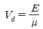
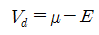
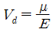
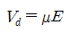
(정답률: 60%)
16. 역방향 바이어스 전압에 의해서 전류가 흐르는 다이오드로서 정전압 회로에 사용되는 것은?
- 정류 다이오드
- 가변용량 다이오드
- 터널 다이오드
- 제너 다이오드
(정답률: 73%)
17. 실리콘(Si) 및 게르마늄(Ge)의 결합 구조는? (문제 오류로 정답이 정확하지 않습니다. 정답지를 찾지못하여 임의 정답 1번으로 설정하였습니다. 정답을 아시는 분께서는 오류 신고를 통하여 정답 입력 부탁 드립니다.)
- 공유 결합
- 이온 결합
- 수소 결합
- 금속 결합
(정답률: 87%)
18. 전계효과 트랜지스터(Field Effect Transistor)의 특징으로 거리가 먼 것은?
- 고속 스위칭이 가능하다.
- 축적시간이 짧다.
- 온도계수를 0으로 할 수 있다.
- 입력 임피던스가매우 낮다.
(정답률: 52%)
19. PN 접합이 순방향 바이어스일 때 동작으로 옳은 것은?
- P형 반도체의 정공만 N형 반도체로 이동한다.
- 전류가 흐르지 않는다.
- 두 반도체의 다수캐리어가 서로 상대편 영역으로 이동한다.
- N형 반도체의 전자만 P형 반도체로 이동한다.
(정답률: 86%)
20. 어떤 금속과 반도체 사이에 형성된 전위장벽 또는 PN접합 정류기의 전하주입으로 인한 속도감소 요소를 제외한 정류기로서의 높고 두꺼운 장벽을 가리키는 용어는?
- 바디 효과(Body effect)
- 항복전압 효과(Breakdown voltage effect)
- 접합 효과(Junction effect)
- 쇼트키 장벽(Schottky barrier)
(정답률: 71%)
2과목: 전자회로
21. 다음 중 시미트 트리거 회로에 대한 설명으로 적합하지 않은 것은? (문제 오류로 정답이 정확하지 않습니다. 정답지를 찾지못하여 임의 정답 1번으로 설정하였습니다. 정답을 아시는 분께서는 오류 신고를 통하여 정답 입력 부탁 드립니다.)
- 외부 클록 펄스가 필요하다.
- 출력으로 구형파를 얻을 수 있다.
- 입력신호의 잡음 제거 목적으로도 입력단에 사용된다.
- 기본적인 시미트 트리거 회로는 기준전압을 가변할 수 있는 것을 제외하고는 비교기와 동일하다.
(정답률: 74%)
22. 다음 그림의 변조도는 약 몇 [%] 인가? (단, A=10[V], B=5[V], C=2.5[V]이다.) (문제 오류로 정답이 정확하지 않습니다. 정답지를 찾지못하여 임의 정답 1번으로 설정하였습니다. 정답을 아시는 분께서는 오류 신고를 통하여 정답 입력 부탁 드립니다.)
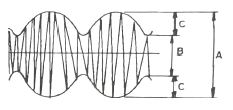
- 10[%]
- 33[%]
- 66[%]
- 80[%]
(정답률: 66%)
23. 하틀레이(Hartley) 발진기에서 궤환 요소는?
- 코일
- 용량
- 저항
- 용량+코일
(정답률: 70%)
24. 다음 연산증폭기 회로의 전체 이득(VO/VS)은 몇 [dB] 인가?
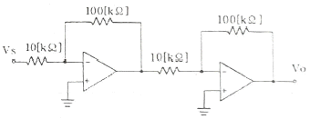
- 10[dB]
- 20[dB]
- 30[dB]
- 40[dB]
(정답률: 61%)
25. RC 결합 증폭기에서 저주파 특성을 제한하는 주 요소로 가장 적합한 것은?
- 극간용량
- 분포용량
- 전류이득
- 입출력 결합용량
(정답률: 60%)
26. 다음 정전압 장치의 출력전압은 몇 [V]인가? (문제 오류로 정답이 정확하지 않습니다. 정답지를 찾지못하여 임의 정답 1번으로 설정하였습니다. 정답을 아시는 분께서는 오류 신고를 통하여 정답 입력 부탁 드립니다.)
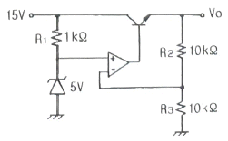
- 5[V]
- 7.5[V]
- 10[V]
- 12.5[V]
(정답률: 63%)
27. 어떤 증폭기의 중간영역 전압이득이 500이고 입력 RC 회로의 하한 임계 주파수가 500[kHz]이다. 주파수 500[kHz]에서 전압 이득은 약 얼마인가?
- 250
- 70.7
- 350
- 707
(정답률: 50%)
28. 무부하 출력 전압이 24[V]인 전원장치에 부하 연결 시 출력전압이 22[V]이면 전압 변동률은 약 몇 [%] 인가?
- 5[%]
- 7[%]
- 9[%]
- 10[%]
(정답률: 77%)
29. 변압기의 2차 코일에 중간탭을 사용하는 정류회로는?
- 반파정류회로
- 전파정류회로
- 브리지정류회로
- 배전압정류회로
(정답률: 47%)
30. NPN 트랜지스터가 활성 영역에서 증폭기로 정상 동작을 위한 바이어스 인가 방법은? (단, B, E, C는 각 각 베이스, 이미터, 컬렉터 이다.)
- B에 대하여 E는 -, C는 +
- B에 대하여 E는 +, C는 -
- E에 대하여 B는 -, C는 +
- E에 대하여 B는 +, C는 -
(정답률: 50%)
31. 상온의 진성반도체에 전압을 인가했을 때 나타나는 현상으로 가장 적합한 것은?
- 전자와 정공은 모두 양(+) 전극으로 이동한다.
- 전자와 정공은 모두 음(-) 전극으로 이동한다.
- 전자는 양(+)전극으로 이동하고, 정공은 음(-)전극으로 이동한다.
- 정공은 양(+)전극으로 이동하고, 전자는 음(-)전극으로 이동한다.
(정답률: 66%)
32. 그림과 같이 이미터 저항을 갖는 증폭회로에서이미터 저항 RE의 가장 중요한 역할은?
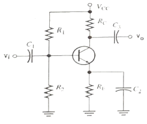
- 출력을 증가시킨다.
- 노이즈를 증가시킨다.
- 주파수 대역폭을 감소시킨다.
- 안정도를 개선시킨다.
(정답률: 71%)
33. 전력증폭기에 대한 설명으로 옳은 것은?
- A급의 경우가 전력효율이 가장 좋다.
- C급의 효율은 50% 이하로 AB급보다 낮다.
- B급은 동작정이 포화영역 부근에 존재한다.
- C급은 반송파 증폭용이나 주파수 체배용으로 사용된다.
(정답률: 66%)
34. 연산증폭기에 계단파 입력전압이 인가되었을 때 시간에 따라 출력전압의 변화율은?
- 전류 드리프트
- 슬루 레이트
- 통상신호제거비
- 출력 오프셋 전압
(정답률: 64%)
35. 다음 설명 중 옳지 않은 것은?
- 전력 효율은 전원 전력 소비량을 적게 하면서 신호 출력을 크게 할 수 있느냐 하는 지수를 말한다.
- A급 전력 증폭기의 컬렉터 손실은 무신호 시에 가장 작다.
- B급 전력 증폭기는 출력이 최대가능 출력의 약 40%일 때 컬렉터 손실이 가장 크다.
- C급 전력 증폭기는 신호 출력의 첨두치에서 가장 큰 손실이 발생한다.
(정답률: 54%)
36. a0=0.9, fα=10[kHz]인 트랜지스터가 f=20[kHz]에서 동작할 때 전류 증폭도의 크기는 약 얼마인가? (문제 오류로 정답이 정확하지 않습니다. 정답지를 찾지못하여 임의 정답 1번으로 설정하였습니다. 정답을 아시는 분께서는 오류 신고를 통하여 정답 입력 부탁 드립니다.)
- 0.34
- 0.4
- 0.46
- 0.43
(정답률: 55%)
37. 효율은 좋으나 출력파형이 심하게 일그러지므로 고주파 동조 증폭기에 한정적으로 응용되는 전력 증폭기는?
- A급 전력증폭기
- B급 전력증폭기
- C급 전력증폭기
- AB급전력증폭기
(정답률: 66%)
38. 다음 원소 중 도너로 사용되지 않는 것은?
- In(인듐)
- P(인)
- As(비소)
- Sb(안티몬)
(정답률: 84%)
39. 다음 그림과 같은 OPAMP 회로에서 출력 전압 VO는? (단, V1=1V, V2=+2V, V3=+3V, R1=500kΩ, R2=1MΩ, R3=1MΩ, Rf=1MΩ이다.) (문제 오류로 정답이 정확하지 않습니다. 정답지를 찾지못하여 임의 정답 1번으로 설정하였습니다. 정답을 아시는 분께서는 오류 신고를 통하여 정답 입력 부탁 드립니다.)
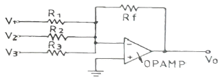
- +3V
- +7V
- -3V
- -7V
(정답률: 69%)
40. 다음 회로에서 R1=200[kΩ], R2=20[kΩ]일 때 부궤환율(β)은?
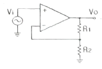
- 약 0.012
- 약 0.023
- 약 0.091
- 약 0.91
(정답률: 41%)
3과목: 논리회로
41. 패리티 비트의 데이터 송신 중의 사용 용도는?
- 오류보정
- 오류검출
- 짝수검출
- 홀수검출
(정답률: 84%)
42. 다음 회로에 해당하는 것은?
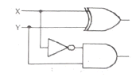
- 반가산기
- 디코더
- 반감산기
- 비교기
(정답률: 60%)
43. 직렬 2진 가산기는 전가산기 1개만으로 가능하며, 회로적으로 병렬 2진 가산기보다 간단하나 연산속도가 느리다. 직렬 2진 가산기를 구성할 때 꼭 필요한 회로는? (문제 오류로 정답이 정확하지 않습니다. 정답지를 찾지못하여 임의 정답 1번으로 설정하였습니다. 정답을 아시는 분께서는 오류 신고를 통하여 정답 입력 부탁 드립니다.)
- 지연 회로
- 해독 회로
- 제어 회로
- 보수 회로
(정답률: 76%)
44. 변수의 수(數)가 3이라면 카르노맵(K-map)에서 몇 개의 칸이 요구되는가?
- 2
- 4
- 6
- 8
(정답률: 68%)
45. 2진수 10101.11를 BCD코드로 변환하면?
- 11001.0001001
- 11001.01110101
- 100001.0001001
- 00100001.01110101
(정답률: 52%)
46. 32 × 1 멀티플렉서에서 필요한 제어선의 수는 몇 개인가?
- 2
- 5
- 8
- 1
(정답률: 74%)
47. 16진수 2A을 2진수로 변환하면? (문제 오류로 정답이 정확하지 않습니다. 정답지를 찾지못하여 임의 정답 1번으로 설정하였습니다. 정답을 아시는 분께서는 오류 신고를 통하여 정답 입력 부탁 드립니다.)
- (001001100110)2
- (001010010110)2
- (001010100110)2
- (001110100110)2
(정답률: 66%)
48. 4bit 레지스터에서 출력이 4개일 때, 입력의 bit수는?
- 2
- 4
- 8
- 16
(정답률: 57%)
49. 다음과 같은 게이트의 출력을 나타낸 것은?
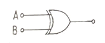
- A+B
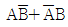
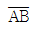
- AB
(정답률: 82%)
50. 그림과 같은 카르노맵의 가장 간단한 논리식은?
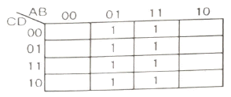
- A
- B
- C
- D
(정답률: 67%)
51. 순서 회로의 설명 중 옳지 않은 것은? (문제 오류로 정답이 정확하지 않습니다. 정답지를 찾지못하여 임의 정답 1번으로 설정하였습니다. 정답을 아시는 분께서는 오류 신고를 통하여 정답 입력 부탁 드립니다.)
- 조합회로가 포함된다.
- 기억소자가 필요하다.
- 카운터는 전형적인 순서회로이다.
- 입력 값의 순서에는 영향을 받지 않는다.
(정답률: 70%)
52. 타이머 IC로 많이 사용되고있는 NE555의 구성 요소가 아닌 것은?
- R-S F/F
- Transistor
- Comparator
- Diode
(정답률: 59%)
53. 다음 회로의 기능은? (문제 오류로 정답이 정확하지 않습니다. 정답지를 찾지못하여 임의 정답 1번으로 설정하였습니다. 정답을 아시는 분께서는 오류 신고를 통하여 정답 입력 부탁 드립니다.)
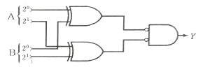
- 2비트 일치 회로
- 2비트 크기 비교 회로(A＞B)
- 2비트 크기 비교 회로(A＜B)
- 2비트 불일치 회로
(정답률: 73%)
54. 다음 불(Boolean) 식을 간단히 한 결과 Y는?
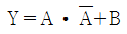
- Y=A
- Y=B
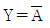
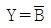
(정답률: 84%)
55. 다음 플립플롭회로의 출력 Q에 대한 논리식은?
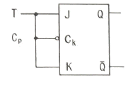
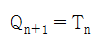
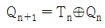
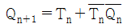
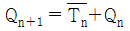
(정답률: 67%)
56. 다음 보기 중 NOR 함수를 나타내는 논리식은?
- F(x,y)=x+y
- F(x,y)=(x+y)’
- F(x,y)=x⊕y
- F(x,y)=x·y
(정답률: 68%)
57. 8bit를 사용하여 나타내는 2진수로서 부호와 절대치 방식으로 나타낼 수 있는 수의 범위는?
- 128 ~ -128
- 128 ~ -127
- 127 ~ -128
- 127 ~ -127
(정답률: 58%)
58. JK 플립플롭의 트리거 입력과 상태 전환 조건을 설명한 것 중 옳은 것은?
- J=O=0, K=0일 때는 0으로 돌아간다.
- J=1, K=0일 때는 0으로 돌아간다.
- J=0, K=1일 때는 1로 돌아간다.
- J=1, K=1일 때는 반전된다.
(정답률: 72%)
59. 그림과 같은 게이트 회로의 출력을 나타내는 것은?
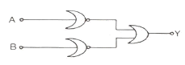
- A+B
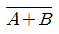
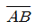
- AB
(정답률: 36%)
60. 다음 그림의 표시에서 출력 F는? (문제 오류로 정답이 정확하지 않습니다. 정답지를 찾지못하여 임의 정답 1번으로 설정하였습니다. 정답을 아시는 분께서는 오류 신고를 통하여 정답 입력 부탁 드립니다.)
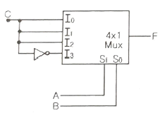
- F(A,B,C)=∑(0,1,2,3)
- F(A,B,C)=∑(0,2,4,6)
- F(A,B,C)=∑(1,3,5,6)
- F(A,B,C)=∑(2,4,6,8)
(정답률: 71%)
4과목: 집적회로 설계이론
61. MOS 구조의 전계효과 중 게이트 전압 VG가 크게 증가하면 전계의 증가에 의해 산화층과 실리콘의 경계면에 소수 캐리어인 전자가 모이는 현상은? (문제 오류로 정답이 정확하지 않습니다. 정답지를 찾지못하여 임의 정답 1번으로 설정하였습니다. 정답을 아시는 분께서는 오류 신고를 통하여 정답 입력 부탁 드립니다.)
- 반전 모드(Inversion mode)
- 공핍 모드(Depletion mode)
- 축적 모드(Accumulation mode)
- 바디 바이어스 효과(Body bias effect)
(정답률: 73%)
62. 실제로 클럭 신호는 MOS의 저항 및 용량 특성에 따라서 전달 과정에서 지연 효과를 갖게 되어 클럭의 시간차가 생긴다. 이와 같은 현상을 무엇이라고 하는가?
- 글리치(glitch)
- 해저드(hazard)
- 경합(race)
- 스큐(skew)
(정답률: 82%)
63. 게이트 수준에서 검증된 설계 데이터인 네트리스트(netlist)를 집적회로로 구현하기 위해 필요한 마스크의 제작 데이터로 변환시키는 과정은? (문제 오류로 정답이 정확하지 않습니다. 정답지를 찾지못하여 임의 정답 1번으로 설정하였습니다. 정답을 아시는 분께서는 오류 신고를 통하여 정답 입력 부탁 드립니다.)
- 레이아웃 설계
- 기능 수준 설계
- 알고리즘 설계
- 시뮬레이션
(정답률: 81%)
64. CMOS 인버터(Inverter) DC 특성 곡선에서 최대 전류가 흐르는 NMOS와 PMOS의 동작 영역은? (문제 오류로 정답이 정확하지 않습니다. 정답지를 찾지못하여 임의 정답 1번으로 설정하였습니다. 정답을 아시는 분께서는 오류 신고를 통하여 정답 입력 부탁 드립니다.)
- NMOS와 PMOS 모두 선형 영역
- NMOS와 PMOS 모두 포화 영역
- NMOS는 포화 영역, PMOS는 선형 영역
- NMOS는 선형 영역, PMOS는 포화 영역
(정답률: 49%)
65. 인버터(Inverter)의 동작점이 아닌 것은?
- 출력이 가질 수 있는 최고 전압
- 출력이 가질 수 있는 최저 전압
- 인버터의 문턱 전압
- 입출력 공동 전압
(정답률: 68%)
66. 실제의 IC 소자들이 가지고 있는 지연 시간을 고려한 시뮬레이션 방법으로 특히, 여러 단이 종속적(cascade)으로 연결되었을 경우 최종 출력에서 발생하는 spike나 glitch등을 방지하기 위한 방법은? (문제 오류로 정답이 정확하지 않습니다. 정답지를 찾지못하여 임의 정답 1번으로 설정하였습니다. 정답을 아시는 분께서는 오류 신고를 통하여 정답 입력 부탁 드립니다.)
- 타이밍 시뮬레이션(tTiming Simulation)
- 구조적 시뮬레이션(Structural Simulation)
- 계층적 시뮬레이션(Hierarchical Simulation)
- 기능성 시뮬레이션(Functionality Simulation)
(정답률: 76%)
67. 게이트 전압(VG)이 기판 전압(VB)보다 낮은 전위를 갖는 경우, MOS 구조의 동작 모드는?
- 반전 모드(Inversion Mode)
- 축적 모드(Accumulation Mode)
- 공핍 모드(Depletion Mode)
- 증가 모드(Enhancement Mode)
(정답률: 66%)
68. VLSI 설계에서 강조되는 구조적 설계의 원칙으로 거리가 먼 것은? (문제 오류로 정답이 정확하지 않습니다. 정답지를 찾지못하여 임의 정답 1번으로 설정하였습니다. 정답을 아시는 분께서는 오류 신고를 통하여 정답 입력 부탁 드립니다.)
- 정규성(Regularity)
- 모듈성(Modularity)
- 국지성(Locality)
- 반복성(Repeatedly)
(정답률: 60%)
69. 사진 식각 공정을 이용한 산화막 식각 공정을 올바른 순서로 나열한 것은?
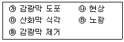
- ㉮→㉯→㉰→㉱→㉲
- ㉮→㉰→㉯→㉱→㉲
- ㉮→㉱→㉯→㉰→㉲
- ㉮→㉱→㉰→㉯→㉲
(정답률: 68%)
70. 게이트 어레이 방식 설계에 대한 설명으로 옳지 않은 것은? (문제 오류로 정답이 정확하지 않습니다. 정답지를 찾지못하여 임의 정답 1번으로 설정하였습니다. 정답을 아시는 분께서는 오류 신고를 통하여 정답 입력 부탁 드립니다.)
- 웨이퍼를 절약할 수 있다.
- 칩 제조 공정의 시간이 절약된다.
- 회로 설계의 유연성이 증가한다.
- 표준 셀 방식보다 칩의 크기가 작다.
(정답률: 66%)
71. MOS 트랜지스터 게이트 출력이 “1” 또는 “0” 레벨에 있을 경우 DC 전력을 거의 소모하지 않는 디바이스는? (문제 오류로 정답이 정확하지 않습니다. 정답지를 찾지못하여 임의 정답 1번으로 설정하였습니다. 정답을 아시는 분께서는 오류 신고를 통하여 정답 입력 부탁 드립니다.)
- n-MOS
- p-MOS
- I-MOS
- CMOS
(정답률: 54%)
72. CMOS 집적회로에 대한 설명 중 옳지 않은 것은?
- pMOS와 nMOS를 상보적으로 사용하여 회로를 구성한다.
- 정적인 전류를 최소화하여 저전력 특성을 갖는다.
- BJT 집적회로에 비하여 고밀도 집적에 유리하다.
- BJT 집적회로에 비하여 고속 동작에 유리하다.
(정답률: 60%)
73. 동적 CMOS 로직과 거의 같으나, 출력단에 인버팅 래치가 달려있는 점이 다른 로직은?
- 카미노 로직
- 슈도 로직
- 도미노 로직
- 트랜스 로직
(정답률: 76%)
74. 완전주문형 집적회로(Full-castom IC)에 대한 설명으로 옳지 않은 것은?
- 세부적인 레이아웃 패턴을 설계자가 직접 설계하는 방식이다.
- 설계자동화의 비중이 반주문형(semi-custom) 방식보다 작다.
- 작은 면적의 집적회로를 설계하는 것에 유리한 방식이다.
- 표준 셀을 이용하는 방식으로 설계시간 단축에 유리하다.
(정답률: 75%)
75. VLSI 레이아웃 설계 후 레이아웃 도면으로부터 추출한 저항 및 커패시턴스 값을 반영하여 논리 시뮬레이션을 다시 실시하는 과정을 일컫는 것은? (문제 오류로 정답이 정확하지 않습니다. 정답지를 찾지못하여 임의 정답 1번으로 설정하였습니다. 정답을 아시는 분께서는 오류 신고를 통하여 정답 입력 부탁 드립니다.)
- back annotation
- floor planning
- logic synthesis
- self-alignment
(정답률: 75%)
76. CMOS 공정에서 p-well보다 n-well 공정을 이용하는 이유로 가장 타당한 것은? (문제 오류로 정답이 정확하지 않습니다. 정답지를 찾지못하여 임의 정답 1번으로 설정하였습니다. 정답을 아시는 분께서는 오류 신고를 통하여 정답 입력 부탁 드립니다.)
- mask 제작이 쉽기 때문이다.
- n-well 형성이 쉽기 때문이다.
- 기생 커패시턴스가 작기 때문이다.
- 기판 바이어스 효과가 크기 때문이다.
(정답률: 63%)
77. 반도체 공정에서 기체 상태의 화합물을 분해할 후 화학적 반응에 의해 반도체 기판 위에 박막이나 에피층을 형성하는 공정은?
- 진공증착(Evaporation)
- 스퍼터링(Sputtering)
- 화학기상증착(Chemical Vapor Deposition)
- 분자선증착(Molecular Beam Epitaxy)
(정답률: 79%)
78. MOS 트랜지스터가 갖는 3가지 작동 영역이 아닌 것은?
- 차단 영역(Cutoff Region)
- 선형 영역(Linear Region)
- 빈선형 영역(Nonlinear Region)
- 포화 영역(Saturation Region)
(정답률: 63%)
79. 전달게이트(transmission gate)에 대한 설명으로 옳지 않은 것은? (문제 오류로 정답이 정확하지 않습니다. 정답지를 찾지못하여 임의 정답 1번으로 설정하였습니다. 정답을 아시는 분께서는 오류 신고를 통하여 정답 입력 부탁 드립니다.)
- 실리콘 사용 면적이 감소하여 회로가 단순화 된다.
- 스위치로 사용하기 위하여 NMOS와 PMOS를 병렬로 연결한 것이다.
- 두 개의 MOS 중 하나가 고장이 나도 동작을 한다.
- ON 상태에서 NMOS와 PMOS가 모두 도통이 되므로 패스트랜스터보다 ON 상태의 저항이 적다.
(정답률: 67%)
80. 베이스 폭이 3×10-3[cm]일 때 펀치-슬로 전압 Vpt가 [V]인 PNP 트랜지스터에서 베이스 폭이 6×10-3[cm]으로 증가하면 Vpt는 얼마인가?
- 25[V]
- 26[V]
- 27[V]
- 28[V]
(정답률: 55%)